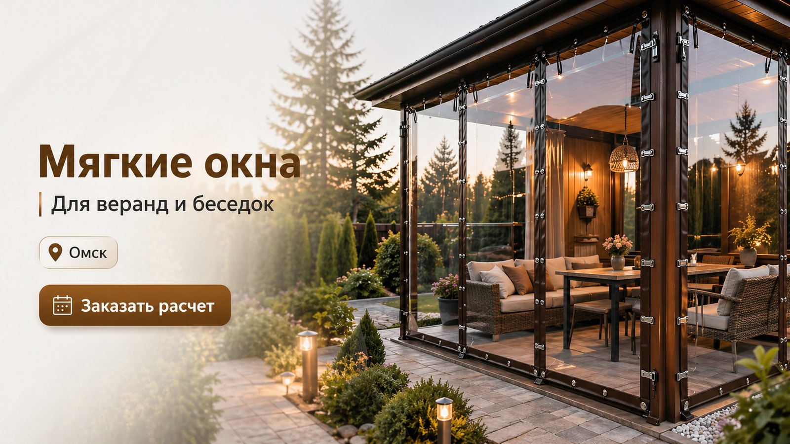
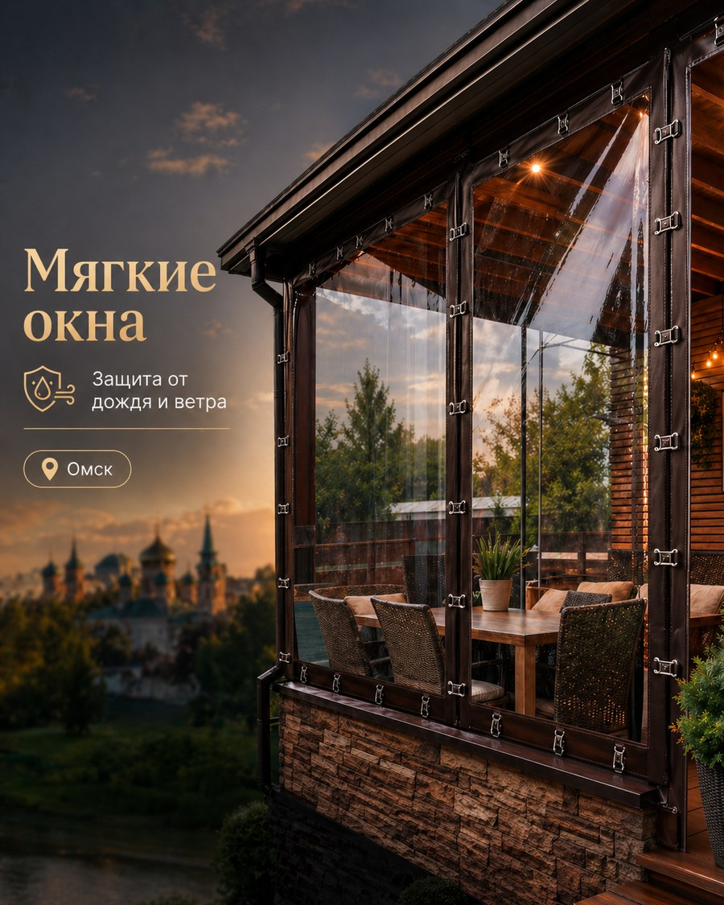

Защита от непогоды
Прозрачные панели закрывают проемы от дождя, ветра, пыли и листьев.

Мягкие окна подходят для дач, частных домов, коттеджей, летних кухонь, беседок, веранд и террас. Они помогают пользоваться зоной отдыха дольше в течение сезона.
Прозрачные панели закрывают проемы от дождя, ветра, пыли и листьев.
Внутри беседки становится спокойнее и теплее, особенно вечером и в межсезонье.
Легкая конструкция без тяжелых рам, подходит для деревянных и металлических строений.

Выберите поселок — каждая кнопка ведет на отдельную SEO-страницу с описанием услуги и формой расчета мягких окон.
Введите ширину, высоту и количество проемов. Мы получим размеры, контакты и адрес объекта, затем подготовим расчет.

Если у вас есть беседка, веранда или терраса в Омске, пригороде или Омской области, мягкие окна помогут закрыть проемы без капитального остекления. Это удобное решение для участков, где важно сохранить свет, обзор и уютную атмосферу зоны отдыха.
Мы принимаем заявки на изготовление мягких окон ПВХ по индивидуальным размерам: для деревянных беседок, каркасных веранд, террас у дома, летних кухонь и зон барбекю. Для расчета достаточно указать размеры проемов и количество окон в форме выше.
Вы отправляете размеры, мы уточняем детали, рассчитываем стоимость и подготавливаем мягкие окна под вашу беседку, веранду или террасу.
Ширина, высота и количество проемов.
Считаем площадь и уточняем крепления.
Делаем полотна из прозрачной ПВХ-пленки.
Устанавливаем на объекте в Омске или области.
Для мягких окон важны размеры, качество полотна и надежное крепление. Полотно закрывает проем, сохраняет прозрачность и защищает от дождя, ветра, пыли и листвы.
При расчете учитываются ширина, высота, количество проемов, особенности конструкции, входы, молнии, ремешки и способ крепления.
Добавлены отдельные страницы под беседки, веранды, террасы, дачи, коттеджи и пригородные поселки.
Да, это один из самых популярных вариантов. Они закрывают беседку от ветра и дождя, при этом не делают ее визуально тяжелой.
Да. Укажите примерные размеры в форме, чтобы получить предварительный расчет. После этого можно уточнить детали и замер.
Да, заявки принимаются по Омску, пригородам, дачным и коттеджным поселкам Омской области.